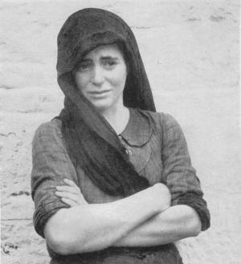

AK-Distomo
AK-Dsitomo auf
facebook,
twitter
instagram
und bluesky
Aktuelles
Veröffentlichungen 2023
Veröffentlichungen 2022
Veröffentlichungen 2021
Veröffentlichungen 2020
Veröffentlichungen 2019
Veröffentlichungen 2018
Veröffentlichungen 2017
Veröffentlichungen 2016
Veröffentlichungen 2015
Veröffentlichungen
2014
Veröffentlichungen
2013
Veröffentlichungen
2012
Veröffentlichungen
2011
Veröffentlichungen
2010
Veröffentlichungen
2009
Veröffentlichungen
2008
Veröffentlichungen
2007
Veröffentlichungen
2006
Gedenkfeiern 2005
Gedenkfeiern 2004
ak-distomo@nadir.org
Public PGP Key: ak-distomo.asc
mit dem Fingerprint:
BC1A B36E 402F FCDA 7D2C B5A4 EA9D 0756 9336 DABE
Unser Info-Mailverteiler kann mit einer
kurzen Mitteilung an
ak-distomo@nadir.org bezogen
werden.
Rechtsstreit vor deutschen Gerichten
Vereinigung der
Okkupationsopfer 1941-1945 Kranj
Opfer Deutscher Gebirgsjäger
- Mittenwald
Links
english
Unser Spendenkonto
Impressum
|
Erinnerung an italienische Militärinternierte 2024
Erinnerung an die NS-Zwangsarbeiter auf dem Sportplatz an der Max-Brauer-Allee
Freitag, 6. September 2024, 17 Uhr
Diren-Dede-Platz, Hamburg (Bodenstedtstraße/Ecke Zeiseweg)
Auf dem heutigen Sportplatz, zwischen Max-Brauer-Allee, Bodenstedtstraße und
Schnellstraße, befand sich von Ende 1944 bis Anfang 1945 ein Lager für
italienische Militärinternierte (IMI). Sie wurden als NS-Zwangsarbeiter von
der Stadtreinigung für Trümmerarbeiten eingesetzt. Als Lager diente
die Jugendherberge, die sich damals auf dem Platz befand, auf Höhe des Amtsgerichts
an der Schnellstraße.
Mit einer Kundgebung wollen wir an die vergessenen NS-Zwangsarbeiter auf dem Sportplatz erinnern.
Wer waren die italienischen Militärinternierten?
Es handelte sich um italienische Soldaten. Sie wurden nach dem 8. September 1943 von der
deutschen Wehrmacht gefangen genommen. An diesem Tag wurde ein Waffenstillstand der
italienischen Regierung mit den Alliierten verkündet. Mussolini war im Juli
1943 gestürzt worden. Die Wehrmacht besetzte daraufhin Norditalien und stellte
die italienischen Soldaten vor die Alternative, entweder an der Seite Deutschlands
weiter im Krieg zu kämpfen oder als Zwangsarbeiter nach Deutschland geschickt zu
werden. Rund 650.000 sagten ”Nein” und wurden als Zwangsarbeiter verschleppt,
davon 17.000 nach Hamburg. Sie wurden nicht als Kriegsgefangene anerkannt, stattdessen
gab ihnen Hitler den Status der ”Militärinternierten” (IMI), um sie auch
in der Rüstungsindustrie einsetzen zu können.
Warum das Zwangsarbeiterlager auf dem Sportplatz?
Eine halbe Million Zwangsarbeiter*innen wurden insgesamt von 1939 bis 1945 in
Hamburger Unternehmen eingesetzt. Sie wurden aus ihrer Heimat verschleppt und genötigt,
in Hamburg zu arbeiten. Sie mussten in über 1.200 Lagern in Hamburg leben. Die 1922 auf
dem Sportplatz erbaute Jugendherberge war während des Krieges von der Stadt Hamburg
übernommen worden, um dort ein Zwangsarbeitslager für 150 italienische
Militärinternierte einzurichten.
Warum an die NS-Zwangsarbeit erinnern?
Zwangsarbeiter*innen wurden in der Kriegswirtschaft dringend benötigt. Der
Abzug der deutschen Arbeitskräfte an die Front musste ausgeglichen werden.
Sie hielten aber nicht nur die Produktion aufrecht, sondern steigerten auch
die Umsätze und Gewinne der in der Kriegswirtschaft tätigen Firmen.
Jeden Tag bewegten sich in den Kriegsjahren bis 1945 Zehntausende Zwangsarbeiter*innen
durch Hamburg. Zwangsarbeiter*innen aus anderen Ländern wurden eingesetzt in
einer Fischräucherei in der Haubachstraße, im Lager in der heutigen
Max-Brauer-Allee, in der Harkortstraße bei Appel Feinkost und weiteren
Betrieben im Umfeld. Sie waren das sichtbarste Zeichen der Ausbeutung und Verschleppung
von Menschen aus anderen Ländern zur Zwangsarbeit in der NS-Zeit.
Die italienischen Militärinternierten waren als Soldaten einst Verbündete
Deutschlands. Ihr ”Nein” zum Krieg machte sie in den Augen der Nazis
zu Verrätern. Sie wurden in den Lagern und den Betrieben oft besonders schlecht
behandelt: Ihre Lebensbedingungen waren von Hunger, unzulänglicher Unterbringung
und medizinischer Versorgung sowie Demütigungen und Misshandlungen bis hin zu
gezielten Mordaktionen gekennzeichnet. Etwa 60.000 Militärinternierte
überlebten die Gefangennahme bzw. Gefangenschaft nicht.
Die NS-Zwangsarbeit und die Ausbeutung der italienischen Militärinternierten
sind weitgehend aus dem Bewusstsein über die Verbrechen des NS-Systems
geraten. Bis heute wurden die italienischen Militärinternierten nicht
entschädigt. Dass es ein Zwangsarbeitslager auf dem Sportplatz gab, ist in
Vergessenheit geraten. Mit unserer Kundgebung richten wir den Blick auf die italienischen
Militärinternierten. Wir möchten an ihr Leid erinnern, ihre Anerkennung
einfordern und uns für ihre Entschädigung einsetzen. Vergessen wir nicht,
zeigen wir Haltung zu den Verbrechen des NS-Systems und zu aktuellen Rechtsentwicklungen.
Weitere Informationen:
https://imiinhamburg.wordpress.com/
Das Programm als Pdf-Dokument:
Programm Erinnerung an italienische Militärinternierte 2024
Zwangsarbeit und Sportstätten
Mittwoch, 4. September 2024, 19 Uhr
ETV Bundesstraße 96, 20144 Hamburg
Zwangsarbeit im Nationalsozialismus war alltäglich und sichtbar. Die Firmen
setzten Zwangsarbeiter*innen ein. Orte und Gebäude in Hamburg wurden als
Unterbringungslager umfunktioniert. Auf einigen von ihnen waren oder sind heute
Sportstätten zu finden. So auf dem Gelände des heutigen Sportplatzes des SC
Teutonia von 1910 in Altona an der Max-Brauer-Allee. Im Volksparkstadion war in den
Umkleidekabinen 1943 - 1945 ebenfalls ein Zwangsarbeitslager.
Was wissen wir über IMI aus den Lagern auf Hamburger Sportstätten?
Und wie gehen die jeweiligen Sportvereine heute mit ihrem Erbe um? Ein Gespräch
über gesellschaftliche Verantwortung im Fußball und Leerstellen in der
Erinnerungsarbeit.
Weitere Informationen:
Zwangsarbeit und Sportstätten
Stolperstein-Verlegung
Sonntag, 8. September 2024, 15 Uhr
Falkenbergsweg 62, Neugraben
Ein Stolperstein vor dem ehemaligen KZ Außenlager am Falkenbergsweg soll an den
einzigen erschossenen italienischen Militärinternierten (IMI) in Hamburg, Cosimo
Guinta, erinnern. Er wurde in der Nacht von 26. auf den 27. April 1945 vom Lagerführer
erschossen.
Cosimo Guinta wurde am 7. Juni 1920 in Barcellona Pozzo Di Gotto in der
Provinz Messina (Sizilien) geboren. Von der deutschen Wehrmacht in Albanien gefangenen
genommen, wurde er im September 1943 nach Hamburg verschleppt.
Cosmo Guinta musste für das Harburger Bauunternehmen, AUG. PRIEN, arbeiten.
Ab März 1945 lebte er im Zwangsarbeitslager am Falkenbergweg.
Weitere Informationen:
Stolperstein-Verlegung
|
Pressemitteilung zur Ausstellung anlässlich des 80. Jahrestages des Massakers in Distomo
11. Juni 2024
Am 10. Juni 2024 gedenken die Bewohner von Distomo zum 80. Mal der 218 Menschen, die dort 1944 von einer SS-Einheit
ermordetet wurden. Vertreter*innen des Arbeitskreis Distomo (AK-Distomo) nehmen an den diesjährigen
Gedenkfeiern des 80. Jahrestages des Massakers teil. Der AK-Distomo hat aus diesem Anlass eine Ausstellung über
seine Aktivitäten der letzten 23 Jahre erstellt, die im Rathaus von Distomo gezeigt werden wird.
Der Arbeitskreis Distomo aus Hamburg wurde im Jahr 2001 gegründet. Der Ak-Distomo ist eine Gruppe von Menschen,
die sich dem Kampf gegen den Faschismus und der Erinnerung an die Verbrechen des Nationalsozialismus verpflichtet sehen. Ein
zentrales Thema war und ist für den Arbeitskreis die Frage der Entschädigung der Überlebenden
und Angehörigen der Ermordeten sowie die Verfolgung der Täter.
Für den AK-Distomo sind internationale Zusammenarbeit und Solidarität ein wichtiger Ansatz für
die politische Arbeit. Die Ausstellung zeigt den gemeinsamen Kampf mit vielen Menschen und Organisationen in Deutschland,
Griechenland, Italien und anderen Ländern um Gerechtigkeit. Antifaschismus kennt keine Grenzen. Der Arbeitskreis
fordert, dass Deutschland seine Pflicht gegenüber den Opfern und Überlebenden der nationalsozialistischen
Verbrechen erfüllt.
Die Ausstellung dokumentiert die Begleitung der Prozesse um Entschädigung vor den nationalen Gerichten in Griechenland,
Italien und Deutschland, sowie vor dem internationalen Gerichtshof in Den Haag. Sie zeigt Bilder und Texte von
Demonstrationen und Veranstaltungen in Athen, Berlin, Den Haag und vielen weiteren Orten wie in Kassel bei der
Eröffnung der documenta 2017.
Gabriele Heinecke vom Arbeitskreis Distomo aus Hamburg erklärt: ”Wir widersprechen mit unserer Arbeit
der Behauptung der deutschen Bundesregierungen, das Thema der Entschädigung für NS-Kriegsverbrechen sei
seit 1990 rechtlich und politisch abgeschlossen. Wir widersprechen der Erzählung, die Aufarbeitung des
Nationalsozialismus sei Deutschland vorbildlich gelungen. Die deutsche Berufung auf den Grundsatz der
Staatenimmunität für NS-Kriegsverbrechen, die Verweigerung der Entschädigung der Betroffenen der
Barbarei, fördert die Vorstellung, solche Menschheitsverbrechen könnten für den Aggressor ohne
Folgen bleiben. Es ist eine Haltung, aus der sich in Europa Nationalismus, Rassismus und rechte Gewalt speist.
Sie fördert eine Politik, die erneut Unmenschlichkeit zu ihrer Grundlage macht.”
Der Arbeitskreis schenkt der Gemeinde Distomo die Ausstellung als Dokument des gemeinsamen Kampfes der letzten zwei Jahrzehnte.
Die folgenden Links führen zu der Ausstellung als pdf-Dateien:
Selbstdarstellung (deutsch)
Selbstdarstellung (griechisch)
Chronik (griechisch)
Chronik (deutsch)
St. Anna (deutsch/griechisch)
Mittenwald (deutsch/griechisch)
Documenta 2017 (deutsch/griechisch)
Distomo (deutsch/griechisch)
Athen (deutsch/griechisch)
Gerichtsverhandlungen (deutsch/griechisch)
|
Deutschland verliert vor italienischen Gerichten
Der Fall Distomo ist noch nicht zu Ende
11. April 2024
Anfang März 2024 veröffentlichte das Berufungsgericht in Rom seine Entscheidung, wonach der Fall Distomo in Italien noch nicht
abgeschlossen ist und fortgeführt werden kann. Das Berufungsgericht folgte damit einer Entscheidung des Vollstreckungsgerichts in
Rom in erster Instanz, dass ebenfalls zu Gunsten der Betroffenen aus Distomo entschieden hatte. Dies ist ein großer Erfolg, nachdem
es zuletzt so aussah, als sei das Verfahren auch in Italien beendet.
Eine Vollstreckung des rechtskräftigen griechischen Urteils des Landgerichts Levadia aus dem Jahr 2007 (!) scheint
in Italien weiterhin möglich. Mit dieser Entscheidung war die BRD verurteilt worden, an die Opfer des Massakers im
griechischen Distomo ca. 28 Mio. Euro als Entschädigung zu zahlen. Da eine Zwangsvollstreckung aus dem Urteil in Griechenland
derzeit nicht möglich ist, weil hierfür bis heute die Zustimmung der griechischen Regierung fehlt, kann die Durchsetzung des
Urteils nur über die Zwangsvollstreckung im Ausland erfolgen.
Rechtsanwalt Joachim Lau aus Florenz kämpft seit vielen Jahren darum, die Ansprüche der Opfer und Angehörigen
der von der SS am 10. Juni 1944 Ermordeten vor italienischen Gerichten durchzusetzen. Diese Bemühungen sabotiert Deutschland
seither immer wieder mittels juristischer und politischer Interventionen. Trotz rechtskräftiger Urteile verweigert Deutschland die
Zahlung unter Berufung auf den Grundsatz der Staatenimmunität. Vor dem Internationalen Gerichtshof (IGH) erwirkte Deutschland 2012
ein Urteil, das die Bundesrepublik - Rechtsnachfolgerin des Deutschen Reichs - vor Schadensersatzklagen aus dem Ausland bewahren sollte. Der
IGH entschied, dass der Grundsatz der Staatenimmunität auch im Fall von NS-Kriegsverbrechen gelte und Deutschland vor Gerichten im
Ausland nicht verklagt werden könne.
Dies sahen italienische Gerichte allerdings anders. Das italienische Verfassungsgericht hatte in einer Grundsatzentscheidung schon
2014 das Urteil des IGH aus 2012 als nicht mit der italienischen Verfassung vereinbar angesehen und zugunsten der Rechte der Opfer Nazi-Deutschlands
geurteilt. Es hatte das Grundrecht auf Zugang zu den italienischen Gerichten betont und die Anwendung des von Deutschland reklamierten
Grundsatzes der Staatenimmunität für NS-Kriegsverbrechen abgelehnt. Das Verfassungsgericht sah den Rang des Menschenrechtsschutzes
als höherwertiger an als das Prinzip der Staatenimmunität. Daher konnte das Verfahren in Italien fortgeführt und in
deutsches Staatseigentum vollstreckt werden.
Zuletzt schien es aber so als hätte Deutschland es geschafft, diese Möglichkeit zu vereiteln. Deutschland klagte im Frühjahr
2022 erneut vor dem Internationalen Gerichtshof in Den Haag gegen Italien, um Vollstreckungen in deutsches Staatseigentum in Italien zu
verhindern. Deutschland nahm einen Eilantrag auf vorläufige Beendigung aller Zwangsvollstreckungsmaßnahmen erst zurück,
nachdem Italien Ende April 2022 zunächst ein Regierungsdekret und dann ein Gesetz verabschiedete, durch das alle gegen Deutschland
gerichteten Entschädigungsprozesse und Zwangsvollstreckungsmaßnahmen gestoppt werden sollten. Gleichzeitig stellte die italienische
Regierung einen Fonds in Aussicht, aus dem italienische NS-Opfer Zahlungen erhalten sollten und der mit der Verabschiedung des Gesetzes auf
ca. 60. Mio. Euro dotiert wurde.
Tatsächlich entschied das italienische Verfassungsgericht in einem Urteil aus Juli 2023 im Sinne Deutschlands, dass dieses
”Schlussstrich-Gesetz” verfassungsgemäß sei. Zwar stelle es einen erheblichen Eingriff in die Rechte der Betroffenen
dar, der wegen der möglichen Zahlungen aus dem Fonds jedoch hinzunehmen sei. Damit, so das Gericht, seien die Rechte der Opfer ausreichend gewahrt.
Dies bedeutet, dass Hunderttausende italienische Opfer von NS-Kriegsverbrechen, ehemalige NS-Zwangsarbeiter sowie Opfer von Massakern,
von Deutschland keine Entschädigung erhalten, ihnen bleibt der Rechtsweg nun auch in Italien verwehrt. Sie erhalten nur die
Almosenzahlungen aus dem italienischen Fonds.
Offen blieb in dieser Entscheidung, was dies für den Fall Distomo bedeutet. Hier haben nun das Vollstreckungsgericht in Rom und
das Berufungsgericht für Klarheit gesorgt. Das Gesetz betrifft nach Auffassung der Gerichte nicht das Distomo-Verfahren, es gilt
nur für Verfahren italienischer Opfer. In verfassungskonformer Auslegung entschied das Vollstreckungsgericht, dass ausländische Klägerinnen
und Kläger nicht betroffen seien. Diese können nun weiterhin die Zwangsvollstreckung in Italien betreiben. Zur Begründung führten
die römischen Gerichte vor allem an, dass es für griechische Opfer keine Entschädigungsregelung gebe, wie sie im Gesetz für italienische
Opfer vorgesehen sei. Damit sei nur eine Auslegung des ”Schlussstrich-Gesetzes” verfassungskonform, die zu einer
Nichtanwendung für ausländische Opfer führe.
Deutschland hat es also bisher nicht geschafft, sich vollständig aus der rechtlichen und moralischen Verantwortung für
die Menschenrechtsverbrechen der Nazis zu ziehen. Es besteht nun wieder die Chance, dass die Pfändung eines Kontos der
Deutsche Bahn AG in Italien zugunsten der Opfer von Distomo doch noch zu einem Erfolg führt. Zu befürchten ist allerdings,
dass Deutschland weiter versuchen wird, Italien politisch unter Druck zu setzen, um das Verfahren doch noch zu stoppen. Außerdem bleibt
das erneute Verfahren in Den Haag vor dem Internationalen Gerichtshof abzuwarten. Allerdings könnte sich auch hier die Lage ein wenig
zu Gunsten der Opfer von Kriegsverbrechen verschoben haben. Denn zuletzt entschieden sowohl der oberste Gerichthof Südkoreas
als auch Gerichte in Brasilien und der Ukraine für eine Einschränkung des Prinzips der Staatenimmunität in Fällen
schwerer Kriegs- und Menschenrechtsverbrechen. Sollten diese Beispiele Schule machen, könnte es mit dem deutschen Anspruch auf
einen Schlussstrich bald vorbei sein.
Der AK Distomo fordert:
Deutschland muss alle Opfer des Nationalsozialismus entschädigen!
Nazi-Verbrechen nicht vergeben, den antifaschistischen Widerstand nicht vergessen!
Gemeinsamer Kampf gegen den wiedererstarkenden Faschismus in Europa!
|
Pressemitteilung und Resolution der Veranstaltung ”Gegen das Vergessen” vom 21. Januar 2024
Eine Veranstaltung des Auschwitz-Komitees i.d. BRD e.V. und des AK Distomo zum
79. Jahrestag der Befreiung des KZ Auschwitz durch die Rote Armee am 27. Januar 1945
Die Veranstaltung fand im Centralkomitee in Hamburg statt, das bis auf den letzten Platz besetzt war.
Auf der Veranstaltung ”Gegen das Vergessen” vom 21.1.2024 berichtete Salo Muller über
seine Geschichte und den Kampf um Entschädigung. Salo Muller wurde 1936 in Amsterdam geboren. Seine
Eltern wurden während der Besatzung der Niederlande durch die NS-Truppen nach Auschwitz deportiert
und ermordet. Bekannt wurde Salo Muller als Physiotherapeut von Ajax Amsterdam sowie durch seine
vielfältigen Bücher. Im Jahr 2018 erreichte er eine Vereinbarung mit der niederländischen
Bahngesellschaft (Nederlandse Spoorwegen) über Entschädigungszahlungen an Opfer der Shoah,
die durch deren Mithilfe deportiert wurden.
Im ersten Teil der Veranstaltung berichtete Salo Muller über seine Kindheit während der
deutschen Besatzung. Nur durch die Unterstützung des niederländischen Widerstands,
deren Mitglieder dabei ihr Leben riskierten, konnte er überleben. Im zweiten Teil
berichteten Salo Muller und sein Anwalt Martin Klingner über die Verhandlungen mit
der niederländischen Bahngesellschaft, die zu Entschädigungszahlungen an
die Überlebenden und deren Angehörigen führten. Salo Muller und sein Anwalt,
Martin Klingner, verdeutlichten die zahlreichen Herausforderungen, die sich in der Debatte um
Entschädigungszahlungen durch die Deutsche Bahn AG ergeben. Sie kritisierten scharf, dass
das Unternehmen, als Hauptverantwortliche und Rechtsnachfolgerin der historischen Deutschen
Reichsbahn, sich ihrer Verantwortung entzieht, während andere Beteiligte wie die
Nederlandse Spoorwegen ihre Verantwortung anerkennen. Salo Muller will heute erreichen,
dass die Deutsche Bahn AG ebenfalls ihre historische Verantwortung übernimmt und die Opfer
der Deportationen endlich entschädigt werden.
Die Teilnehmer:innen der Veranstaltung unterstützen Salo Muller und verabschiedeten die
folgende Resolution, die sich an die Deutsche Bahn AG und die Bundesregierung richtet:
Wir bedanken uns bei Salo Muller für seinen Bericht über die nationalsozialistische
Verfolgung, über seine Geschichte und die seiner Familie während der Shoah.
Wir erinnern an den niederländischen Widerstand, dem Salo Muller sein Überleben verdankt.
Wir gedenken der 70 Familienangehörigen von Salo Muller, die in Auschwitz ermordet wurden.
Wir unterstützen die Forderung von Salo Muller nach Anerkennung des Leids und Entschädigung
durch die Deutsche Bahn AG.
Wir teilen die Ansicht von Salo Muller ”Nur wer zahlt, meint es ernst.”
Wir bewundern Salo Muller für seinen erfolgreichen Kampf um Entschädigung durch die niederländische Bahn.
Wir fordern die Deutsche Bahn AG als Rechtsnachfolgerin der Deutschen Reichsbahn auf, die moralische und
materielle Verantwortung für die Beteiligung am Holocaust durch die Deportation von Millionen
Menschen in die Vernichtungs- und Konzentrationslager zu übernehmen.
Wir fordern die Bundesregierung und den Vorstand der Deutschen Bahn AG auf mit Salo Muller
sowie seiner rechtlichen Vertretung in Verhandlungen einzutreten und eine angemessene
Entschädigungsregelung zu vereinbaren.
In Gedenken an die Opfer des Holocausts.
Hamburg, den 25. Januar 2024
Auschwitz-Komitee i.d. BRD e.V. und AK Distomo
|
Den Krieg verloren, aber das Geld bleibt hier
Deutschlands Sieg in Italien über die Opfer der NS-Verbrechen
Deutschland hat es geschafft. Das Verfassungsgericht Italiens entschied im
Juli 2023 im Sinne der Bundesregierung. Hunderttausende italienische Opfer von
NS-Kriegsverbrechen, ehemalige NS-Zwangsarbeiter sowie Opfer von Massakern,
erhalten von Deutschland keine Entschädigung, ihnen bleibt der Rechtsweg
in Italien verwehrt.
Seit vielen Jahren klagen vor allem ehemalige italienische NS-Zwangsarbeiter
in Italien gegen Deutschland, um endlich eine Entschädigung für das
erlittene Leid und Unrecht zu erhalten, dass ihnen Nazideutschland angetan hatte.
Hunderttausende - Zivilisten und Soldaten - waren vom ”Dritten Reich” nach
Deutschland verschleppt worden, um Zwangsarbeit zu leisten. Vor italienischen
Gerichten bekamen sie Recht, ihnen wurden Beträge bis zu Euro 100.000,- pro
Person zugesprochen.
Doch trotz rechtskräftiger Urteile verweigerte Deutschland die Zahlung unter
Berufung auf den Grundsatz der Staatenimmunität. Vor dem Internationalen Gerichtshof
erwirkte Deutschland 2012 ein Urteil, das die Bundesrepublik vor Klagen aus dem
Ausland bewahren sollte. Der IGH entschied, dass der Grundsatz der Staatenimmunität
auch im Fall von Kriegsverbrechen gelte und Deutschland im Ausland nicht verklagt
werden dürfe.
Dies sahen italienische Gerichte allerdings anders. Das italienische Verfassungsgericht
hatte in einer Grundsatzentscheidung schon 2014 gegen den IGH und zugunsten der
Rechte der Opfer von Nazi-Deutschland geurteilt, das Grundrecht auf Zugang zu den
italienischen Gerichten betont und die Anwendung des von Deutschland reklamierten
Grundsatzes der Staatenimmunität für NS-Kriegsverbrechen abgelehnt. Das
Verfassungsgericht sah den Rang des Menschenrechtsschutzes als höherwertig an als
das Prinzip der Staatenimmunität. Daher konnten die Prozesse in Italien
fortgeführt und gegen deutsches Eigentum vollstreckt werden.
Dies ist nun nicht mehr möglich. Das italienische Verfassungsgericht entschied
in seinem jüngsten Urteil im Sinne Deutschlands.
In zwei Fällen ehemaliger NS-Zwangsarbeiter, die rechtskräftige Urteile
gegen Deutschland erwirkt hatten, drohte Deutschland die Beschlagnahme bzw. die
Versteigerung deutschen Staatseigentums in Rom. Darauf strengte Deutschland im
Frühjahr 2022 ein Eilverfahren vor dem Internationalen Gerichtshof in Den Haag
an, um die Vollstreckung zu verhindern. Deutschland nahm den Antrag erst zurück,
als Italien unter diesem Druck Ende April 2022 erst ein Regierungsdekret und dann ein
Gesetz verabschiedete, durch das alle gegen Deutschland gerichteten
Entschädigungsprozesse und Zwangsvollstreckungsmaßnahmen gestoppt wurden.
Das Landgericht in Rom setzte daraufhin die Vollstreckung in deutsches Staatseigentum
im November 2022 aus und legte das Verfahren dem italienischen Verfassungsgericht vor,
weil es dieses Schlussstrich-Gesetz für verfassungswidrig hielt. Das
Verfassungsgericht entschied nunmehr Ende Juli 2023, dass das Schlussstrich-Gesetz
doch verfassungsgemäß sei. Zwar stelle es einen erheblichen Eingriff in
die Rechte der Betroffenen dar, wenn Deutschland vor Klagen und
Zwangsvollstreckungsmaßnahmen geschützt werde. Dennoch stehe dieses
Gesetz im Hinblick auf den Grundsatz der Staatenimmunität im Einklang mit der
Verfassung. Grund hierfür sei, dass die italienische Regierung mit dem Gesetz
zugleich einen Fonds begründet habe, aus dem italienische Opfer entschädigt
werden können. Dieser ist mit ca. Euro 60 Millionen dotiert. Damit, so das Gericht,
seien die Rechte der Opfer ausreichend gewahrt. Mit Zahlung aus dem Fonds
erlöschen alle Rechte und Ansprüche auf Entschädigung gegenüber
Deutschland.
Deutschland hat es wieder einmal geschafft, sich aus der rechtlichen und
moralischen Verantwortung für die NS-Opfer zu ziehen. Nicht der Nachfolgestaat
Nazideutschlands sondern Italien wird die Zahlungen an die italienischen Opfer
der NS-Verbrechen selbst erbringen. Davon profitieren werden aber nur
diejenigen Überlebenden oder deren Angehörige, die rechtzeitig bis zu
einem Stichtag Klagen gegen Deutschland erhoben hatten. Zudem werden die Zahlungen
sehr begrenzt sein und nicht mal einen Bruchteil dessen erreichen was den
Betroffenen von italienischen Gerichten zugesprochen worden war.
Das ist das perfide Ergebnis deutscher Machtpolitik in Europa. Mit ökonomischem
Druck und politischer Erpressung hat Deutschland erst Griechenland und dann
Italien in die Knie gezwungen. Die Leidtragenden sind die Opfer der NS-Verbrechen und
deren Angehörige.
Was ist also davon zu halten, wenn die gegenwärtige Bundesregierung über
menschenrechts-orientierte Außenpolitik schwadroniert? Nichts. Nur wenn es
den eigenen Interessen nützt, werden Menschenrechte in Stellung gebracht.
Für die Opfer der NS-Verbrechen hat Deutschland allenfalls
warme Worte an Gedenktagen übrig. Doch die Schuld ist nicht
beglichen, das Thema der Entschädigung für Menschen-
und Völkerrechtsverbrechen ist aktuell. Deutschland hat Macht,
eine Rechtfertigung gegenüber den Opfern des deutschen Faschismus
hat es nicht.
Der AK Distomo fordert weiterhin:
Deutschland muss alle Opfer des Nationalsozialismus entschädigen!
Nazi-Verbrechen nicht vergeben, den antifaschistischen Widerstand nicht vergessen!
Gemeinsamer Kampf gegen den wiedererstarkenden Faschismus in Europa!
Hamburg, den 17. September 2023 AK-Distomo
|
Griechenland unter deutscher Besatzung
(1941-1944)
Massaker - Ausplünderung - Holocaust
|
Für heutige Touristen ist Griechenland vor allem ein schönes Urlaubsziel, bestimmt
durch Sonne, Tavernen und die Überreste der griechischen Antike - Akropolis,
Delphi oder Olympia. Von der jüngeren Geschichte, insbesondere der deutschen
Besatzung Griechenlands während des zweiten Weltkriegs, wissen die meisten nur
wenig. Griechische Ortsnamen wie Distomo, Kalavryta und Kommeno standen jahrelang
in keinem Reiseführer. Sie stehen jedoch beispielhaft für die
nationalsozialistischen Verbrechen an der griechischen Zivilbevölkerung und die
Erinnerung an das erfahrene Leid. Am 10. Juni 2023 jährt sich das Massaker von
Distomo zum 79. mal, mit einer Gedenkfeier wird auch dieses Jahr den 218 Menschen
gedacht werden, die 1944 von einer SS-Einheit ermordetet wurden.
Am 6. April 1941 überfiel die deutsche Wehrmacht Griechenland. Die
militärische Besatzung dauerte bis zum 3. November 1944 an. Kennzeichen war
ein allgegenwärtiger Terror gegen die griechische Zivilbevölkerung, die
Vernichtung des größten Teils der jüdischen Bevölkerung und die
ökonomische Ausplünderung des Landes unter Inkaufnahme tausendfachen
Hungertodes. Ca. 15 % der griechischen Bevölkerung kam während dieser Zeit
ums Leben. Auf den Partisanenkrieg des griechischen Widerstands reagierten die
Deutschen mit wahllosen Greueltaten. Mindestens 30.000 griechische Zivilisten
fielen sogenannten Vergeltungsaktionen der deutschen Besatzungstruppen zum Opfer,
hunderte von Dörfern wurden zerstört, Tausende starben in Gefängnissen
und Konzentrationslagern. Die jüdische Bevölkerung Griechenlands wurde
systematisch erfasst, in die Vernichtungslager deportiert und dort ermordet.
58.000 Jüdinnen und Juden, ca. 83 % der griechischen Juden wurden ermordet,
die große jüdische Gemeinde in Thessaloniki fast vollständig vernichtet,
ihr Vermögen geraubt.
Die Verbrechen während der deutschen Besatzung Griechenlands sind in der
Bundesrepublik Deutschland ohne jede rechtliche Konsequenz geblieben. Vor deutschen
Gerichten wurde bis heute nicht einer der Täter verurteilt, die meisten Opfer
wurden niemals entschädigt. Die bundesdeutschen Nachkriegsregierungen taten alles,
um die Kriegsverbrecher vor strafrechtlicher Verfolgung zu schützen, denn die
ehemaligen Wehrmachtsoldaten wurden zum Aufbau der Bundeswehr gebraucht.
Gleichzeitig widersetzte man sich den griechischen Forderungen nach
Entschädigungsleistungen. Bis heute behauptet die Bundesregierung, mit einer
einmaligen Zahlung von DM 115 Mio. im Jahr 1961 sei alles erledigt. Dieser Betrag
deckte aber noch nicht einmal im Ansatz die Schulden der BRD gegenüber Griechenland ab.
Die griechischen Opfer der Massaker von Wehrmacht und SS wie auch die meisten
Überlebenden des Holocausts haben bis heute keine Entschädigungsleistungen
erhalten. Sie fordern von der deutschen Regierung die Anerkennung der Verbrechen und
eine angemessene Entschädigungsleistung. Von der gegenwärtigen Bundesregierung
wird zwar ”Trauer und Scham” bekundet (Bundespräsident Rau in Kalavryta),
an der Haltung der Bundesregierung zur Entschädigungsfrage hat sich indes bis heute
nichts geändert. Aus Berlin kommt stets dieselbe monotone Antwort: Es wird nicht gezahlt!
Deutschland ist verpflichtet, allen Opfern der nationalsozialistischen Verbrechen
eine angemessene Entschädigung zu zahlen. Die Weigerung der Bundesregierung
stellt eine permanente Demütigung der Opfer und eine Nichtanerkennung der
Verbrechen dar. Nach über 70 Jahre nach dem Ende der deutschen Besatzung muss den
Überlebenden und Hinterbliebenen endlich Gerechtigkeit widerfahren.
Diese kategorische Weigerung auch nur in Verhandlungen einzutreten, führte zu einer
Welle von Klagen gegen die Bundesrepublik Deutschland, vor allem vor griechischen Gerichten.
Im Fall Distomo gelang dabei ein spektakulärer Erfolg. Deutschland wurde im April
2000 vom obersten griechischen Gerichtshof (Areopag) rechtskräftig zur Zahlung von
ca. 28 Mio. Euro verurteilt, dennoch hat Berlin bis heute keinen Cent gezahlt. Mit
politisch-diplomatischem Druck wurde die griechische Regierung erfolgreich genötigt,
die Vollstreckung gegen Deutschland aus dem Distomo-Urteil zu unterbinden.
Eine Durchsetzung des Urteils in Griechenland wurde somit unmöglich. Die Kläger aus
Distomo
wandten sich nach Italien und beantragten vor italienischen Gerichten die
Vollstreckung der griechischen Urteile. Sämtliche italienischen Gerichte bis hin
zum Kassationsgerichtshof in Rom bestätigten die Vollstreckbarkeit der griechischen
Urteile. Der Immunitätseinwand Deutschlands wurde zurückgewiesen, da dieser auf
Verbrechen
gegen die Menschheit nicht anwendbar ist.
Doch Deutschland wollte sich den italienischen Urteilen noch immer nicht beugen und
erhob am 23.12.2008 Klage gegen Italien vor dem Internationalen Gerichtshof in Den Haag. Bei
einem Gipfeltreffen im Herbst 2008 in Triest hatten die deutsche und die italienische
Regierung (Merkel/Berlusconi) einvernehmlich die Einleitung des Verfahrens vor dem IGH
beschlossen, um die Durchsetzung der berechtigten Entschädigungsansprüche von
NS-Opfern
gegenüber Deutschland auf diese Weise zu vereiteln.
Am 3.2.2012 verkündete der Internationale Gerichtshof in Den Haag seine Entscheidung im
Fall Deutschland gegen Italien. Er gab der Klage Deutschlands statt und gewährte der
Bundesrepublik
Immunität gegenüber Klagen von NS-Opfern in Italien. Mit diesem Urteil wurde der
Klageweg für NS-Opfer in deren Herkunftsländern versperrt und bedeutet eine
Kapitulation des
Rechts vor der Macht. Das Ergebnis ist eine faktische
Beseitigung des Individualrechtsschutzes für die Opfer von Kriegs- und
Menschheitsverbrechen.
Selbst schwerste Staatsverbrechen sollen keine
Ausnahme mehr vom Prinzip der Staatenimmunität erlauben.
In Italien wurde das Urteil des IGH in italienische Gesetze umgewandelt, nach denen Klagen
gegen deutsche Verbrechen während des II. Weltkriegs abzuweisen sind. Allerdings
widerspricht dieses Gesetz dem in Italien verbürgten Grundrecht auf Zugang zu den Gerichten. Folglich
erklärte am 22.10.2014 das italienische Verfassungsgericht dieses Gesetz für verfassungswidrig!
Die Prozesse von italienischen NS-Opfern gegen Deutschland vor italienischen Gerichten werden bis heute
geführt. Derzeit ist ein Konto der Deutschen Bahn AG zugunsten der NS-Opfer aus Distomo
gepfändet und ein Vollstreckungsgericht muss entscheiden, ob das gepfändete Geld frei gegeben wird.
|
Für die sofortige Entschädigung aller griechischen Opfer des
Nationalsozialismus!
|
|